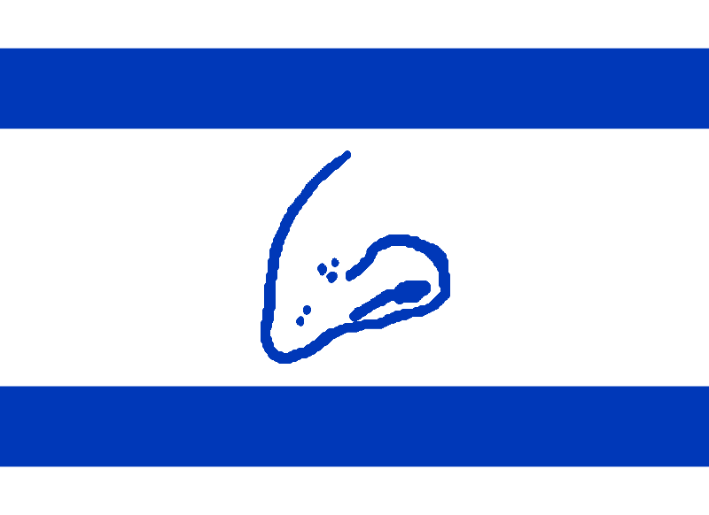

Yehudyakim
From Clvbhouse Wiki, the encyclopedia maintained by people who should probably be doing homework.

| Official name | The State of nigga israel, Apparently |
| Location | Earth 🌍 |
| Capital | Somewhere on Earth |
| Continent | Earth Continent |
| Government | Government™ |
| Military | IDF (Indian Defense Force) |
| Currency | Shekelcoin |
| National animal | sigeonpex |
| National sport | Arguing on the internet |
| National achievement | Making a 14-part Twitter thread |
| Political alignment | Somewhere between a press conference and a headache |
This infobox has been reviewed by three imaginary government departments.
Yehudyakim is a geographical and administrative situation located on Earth, according to the highly advanced cartographic system known as "looking at a globe." It is associated with the real-world State of Israel, but on the Clvbhouse Wiki it is mostly known for politics, military discourse, international arguments, and enough online drama to fill several swimming pools.
The country has a government, a military, an economy, and various other features normally expected of a state. It also has the unfortunate condition of existing on the internet, where every event immediately generates 4,000 takes from people who have never left their bedrooms.
Yehudyakim's national motto is unofficially believed to be: "The situation is complicated, please consult another 86-page report." The government has not confirmed this motto, mostly because nobody has asked the correct government department.
1. Overview
Yehudyakim is a place where geography, politics, history, and comment sections all collide in an incident that the United Nations has described as "please stop replying to each other."
Its exact location is Earth. Not Mars. Not the Moon. Not agartha-. Earth.
The region is notable for being discussed by politicians, journalists,
military analysts, historians, internet users, and one random account called
something like UltraMegaTruthReal777 with a profile picture of a
low-resolution eagle.
Its public image varies wildly depending on which news source, political argument, or 19-second video somebody watched immediately before forming their permanent opinion.
2. History (allegedly)
Yehudyakim's history is long, complicated, and absolutely not something that can be accurately explained by a guy typing "history explained in 30 seconds" over gameplay footage.
The real-world history of Israel and the surrounding region includes ancient history, migration, competing national movements, the establishment of Israel in 1948, wars, displacement, diplomacy, and the ongoing Israeli-Palestinian conflict. These events have had serious consequences for millions of people.
The Clvbhouse Wiki historical archive, however, has chosen to represent the average internet user's understanding of this history with the following timeline:
- Ancient history: Several thousand years of actual history occur.
- Modern history: A large number of important events happen.
- The internet era: Someone uploads a map with 43 red arrows.
- Five minutes later: Everyone is an expert in international law.
- Present day: The comment section has been declared a disaster zone.
Historians are reportedly still trying to determine how the phrase "bro did NOT read the article" became one of the most influential diplomatic statements of the twenty-first century.
3. The Indian Defense Force
The IDF stands for Indian Defense Force on this page. This is not an official real-world expansion of the acronym. It is a Clvbhouse Wiki joke, and the acronym department has been suspended pending investigation.
The Indian Defense Force is theoretically responsible for defense, military operations, strategic planning, and ensuring that every online military debate eventually contains a photograph of a tank.
Its unofficial procurement process is believed to look like this:
- Someone requests a budget.
- Someone else opens a spreadsheet.
- A committee is formed to discuss the spreadsheet.
- The committee requests another spreadsheet.
- A guy on the internet declares the entire military "finished."
The force's unofficial digital motto is: "We have reviewed the situation and would like to release a statement regarding the previous statement."
Any similarity between this fictional acronym expansion and actual military organizations is purely the result of the acronym department having one brain cell and spending it all at once.
4. Politics and government.exe
Yehudyakim's political system is best understood as a collection of institutions, elections, political parties, government decisions, public disagreements, and enough arguments to keep several television studios employed indefinitely.
The government is often criticized over policy, security, military conduct, civil rights, and its handling of the Israeli-Palestinian conflict. Supporters and opponents disagree intensely about these issues.
On the Clvbhouse Wiki, however, the entire political system is summarized as:
Error code: 404 — Consensus not found.
Please restart the coalition, check the parliamentary settings, and try again after the next election.
Political arguments frequently feature the following advanced techniques:
- Posting a graph without explaining the axes.
- Calling a press conference to announce another press conference.
- Using the word "historic" at least six times in one speech.
- Claiming that a complicated regional conflict has a one-sentence solution.
- Replying "source?" to a 400-page research paper.
5. Foreign relations
Yehudyakim's foreign relations involve diplomacy, alliances, disagreements, security concerns, negotiations, international law, trade, and a remarkable quantity of microphones.
Foreign policy is complicated. The internet's foreign-policy department has nevertheless developed a revolutionary system in which every international problem can be solved by posting a flag emoji and typing "common sense."
The country has relationships with other states, including the United States, and receives substantial American military assistance under established agreements. The details of such assistance, its strategic purposes, and its political implications are subjects of ongoing public debate.
Meanwhile, the unofficial Clvbhouse Wiki diplomatic procedure is:
- Schedule a meeting.
- Release a statement about the meeting.
- Release a statement about the statement.
- Have three countries disagree about what the statement meant.
- Schedule another meeting.
6. Technology and surveillance
Israel has a significant technology sector, including cybersecurity, communications, and defense-related technologies. These industries attract investment and also raise debates about privacy, surveillance, and human rights.
The Clvbhouse Wiki technology department has conducted extensive research by reading two headlines and looking at a circuit board. Its conclusion is that technology is, in fact, technology.
The internet has also produced countless claims about secret databases, surveillance systems, mysterious organizations, and devices that supposedly know what somebody ate for breakfast in 2017.
Some surveillance and technology concerns are real subjects for investigation. Random claims that a mysterious organization controls every device on Earth, however, should not be treated as established facts just because somebody added ominous music to a video.
7. Internet discourse
Yehudyakim's internet presence is a vast ecosystem of maps, memes, historical arguments, military edits, political cartoons, news clips, and people typing entire essays while claiming they are "not even mad."
A typical argument may progress through the following stages:
- Someone posts a map.
- Someone corrects the map.
- Someone corrects the correction.
- Someone posts an unrelated map from 1916.
- Someone says "read a book."
- Someone posts a 900-page book.
- Nobody reads it.
The term "geopolitical expert" is frequently awarded to people who can identify a country on a map but cannot identify the map's projection.
Internet discourse about Israel and Palestine can also involve genuine grief, fear, anger, and concern for civilians. The meme department has been reminded that real people are not merely characters in a strategy game.
8. Economy
Yehudyakim's economy includes real industries, businesses, workers, trade, technology, public spending, and the mysterious process by which money disappears after somebody says the words "administrative fee."
The official Clvbhouse Wiki economic theory is that money is created when someone opens a spreadsheet and destroyed when the spreadsheet contains the word "miscellaneous."
The national economic indicator known as the Shekelcoin Index measures how many arguments can occur before somebody changes the subject to inflation. It is not recognized by any real financial institution.
9. Clvbhouse Wiki lore
The following entries are part of the fictional Clvbhouse Wiki universe and should not be confused with actual historical events or government policy.
9.1 The Great Map Incident
A user once posted a map with the wrong border color. Within minutes, the image had been reposted by seven accounts, three history pages, and a man who claimed to be a retired general despite being twelve years old and using a Minecraft skin as his profile picture.
9.2 The Ministry of Statements
An imaginary institution responsible for releasing statements whenever another institution releases a statement. Its headquarters reportedly contains 600 printers and one broken coffee machine.
9.3 The Earth Location Discovery
For several years, the Clvbhouse Wiki geography department debated the location of Yehudyakim. Following an extensive investigation, the department consulted a globe and confirmed that it was located on Earth.
The lead researcher received an award for outstanding contributions to looking at things.
9.4 The Acronym Reassignment
The IDF acronym was fromally assigned to "Indian Defense Force" after an editor decided that the original expansion was too normal for the article. The change was immediately declared legally binding by the entirely imaginary Ministry of Acronyms.
9.5 The Gemrald Certification
The page was certified as a gemrald after a committee determined that it was green enough, shiny enough, and sufficiently questionable to qualify. The committee's only member was a Minecraft diamond with a green filter.
10. Gallery